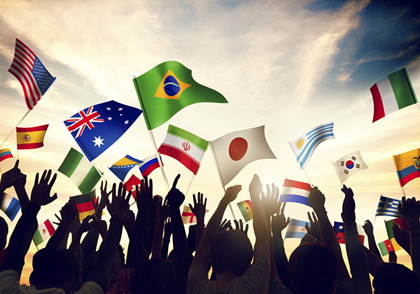
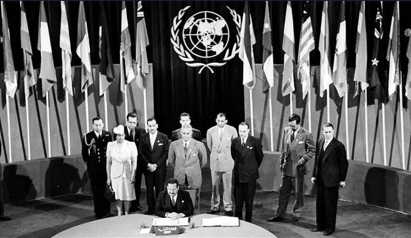

What is United Nations?
The United Nations (UN) is an organization whose stated purposes are to maintain international peace and security, develop friendly relations among nations, achieve international cooperation, and serve as a centre for harmonizing the actions of nations.[2] It is the world's largest international organization.[3] The UN is headquartered in New York City (in the United States, but with certain extraterritorial privileges), and the organization has other offices in Geneva, Nairobi, Vienna, and The Hague, where the International Court of Justice is headquartered.

The UN was established after World War II with the aim of preventing future world wars, and succeeded the League of Nations, which was characterized as ineffective.[4] On 25 April 1945, 50 nations met in San Francisco, California for a conference and started drafting the UN Charter, which was adopted on 25 June 1945. The charter took effect on 24 October 1945, when the UN began operations. The organization's objectives, as defined by its charter, include maintaining international peace and security, protecting human rights, delivering humanitarian aid, promoting sustainable development, and upholding international law.[5] At its founding, the UN had 51 member states; as of 2023, it has 193 – almost all of the world's sovereign states.[6]
!!CLICK HERE!!